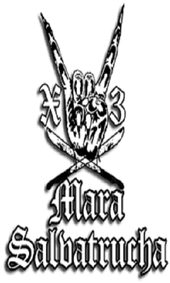

Mara Salvatrucha

Mara Salvatrucha (Ма́ра Сальватру́ча, что на сленге значит «бригада сальвадорских бродячих муравьёв», или MS-13) — хорошо организованная международная преступная группировка; одна из самых жестоких, многочисленных и быстрорастущих уличных банд Центральной и Северной Америки, которая активно действует на территории нескольких стран (прежде всего, в США, Мексике, Сальвадоре, Гондурасе и Гватемале). По разным оценкам, численность преступного синдиката колеблется от 50 до 300 тыс. человек, включая ассоциированных членов (в том числе в США — от 10 до 40 тыс.). Согласно оценкам правоохранителей, в том числе ФБР, численность Mara Salvatrucha составляет около 50—80 тыс. человек, из которых около 10—15 тыс. находятся в США. Этнический состав банды является смешанным, в Соединённых Штатах в ней состоят сальвадорцы, гондурасцы, гватемальцы, никарагуанцы, мексиканцы и другие латиноамериканцы (как недавние иммигранты, так и американцы первого поколения). Mara Salvatrucha действует в границах определённой городской территории, периодически предпринимая попытки расширить подконтрольные владения (кроме того, она достаточно активна и влиятельна в тюрьмах Центральной Америки). Mara Salvatrucha занимается многими видами преступного бизнеса, в том числе торговлей наркотиками, оружием и людьми; грабежами, рэкетом, заказными убийствами, похищениями людей с целью получения выкупа, сутенёрством, угонами автомобилей, отмыванием денег и мошенничеством. Многие уличные торговцы и небольшие магазины, расположенные на территориях Mara Salvatrucha, платят банде до половины дохода за возможность работать. Вынуждены платить MS-13 и многие проживающие в США сальвадорцы, родственников которых в случае отказа бандиты изувечат или убьют на родине (как на воле, так и в тюрьме). Но наибольшую прибыль Mara Salvatrucha получает от посредничества в наркоторговле или собирая дань за право торговать наркотиками на «своей» территории. Также на MS-13 замыкаются многочисленные команды воров, промышляющие в розничных сетях, небольших магазинах и аптеках. МS-13 возникла в Лос-Анджелесе в среде иммигрантов из Сальвадора, которые массово хлынули в США в начале 1980-х годов, спасаясь от гражданской войны в своей родной стране (к началу 1990-х годов только в Лос-Анджелесе проживало около 300 тыс. сальвадорцев). Подвергаясь насилию со стороны других уличных банд (прежде всего латинос из 18th Street gang и афроамериканцев), сальвадорцы в ответ создали свою группировку. С ростом численности иммигрантов и расширением влияния у Mara Salvatrucha стали появляться территориальные «филиалы» («клики») — Holywood Locos, Sailors Locos Salvatruchos, Langley Park Salvatruchos, Teclas Locos Salvatruchos, Centrales Locos Salvatruchos, Directa Locos Salvatruchos, Chilangeras Locos Salvatruchos, Brentwood Locos Salvatruchos, Hempstead Locos Salvatruchos, Familia Mara Salvatrucha, Freeport Locos Salvatruchos, Francis Street Locos, Park View Locos Salvatruchos, Coronado Street Locos, Pee Wee Locos, Rampart Street Locos, Western Locos Salvatrucha, Normandie Locos Salvatruchos и Leeward Grandes Salvatruchos (последние две «клики», базирующиеся в Лос-Анджелесе, к 2007 году являлись наиболее авторитетными). С начала 1990-х годов американская полиция и иммиграционные власти стали активно практиковать массовую высылку членов Mara Salvatrucha на родину, таким образом положив начало популяризации банды в Сальвадоре. Американская гангстерская субкультура (стиль и цвета одежды, манера поведения, жесты и сленг, музыкальная культура, включая гангста-рэп) нашла в истерзанном войной Сальвадоре благоприятную почву, но, столкнувшись с местными традициями, стала более жестокой и кровавой. Mara Salvatrucha начала подминать под свой контроль целые городские районы и тюрьмы; постепенно к ней стали примыкать бывшие боевики, прошедшие гражданскую войну, и банда распространила своё влияние по всей Центральной Америке (а тюрьмы превратились в настоящие «университеты» для начинающих бандитов). В 1996 году в Сальвадоре было заключено первое перемирие между враждующими MS-13 и М-18, но жёсткая политика властей по отношению к бандам нарушила мир и спровоцировала новую волну насилия. 13 июля 2003 года недалеко от Вашингтона гангстеры из Mara Salvatrucha убили 17-летнюю беременную Бренду Пас, узнав что она будучи членом банды, стала осведомителем ФБР и участвовала в программе защиты свидетелей (это преступление имело широкую огласку в прессе). В 2004 году на Лонг-Айленде прошла представительная встреча лидеров MS-13, на которой они попытались сблизить «клики» Западного и Восточного побережий США. В декабре 2004 года возле города Сан-Педро-Сула на севере Гондураса боевики Mara Salvatrucha расстреляли пассажирский автобус, в результате чего 28 человек, включая шестерых детей, погибли и 14 получили тяжёлые ранения. Эта кровавая акция устрашения была предпринята бандитами в ответ на планы властей страны ввести смертную казнь за тяжкие преступления. Несмотря на продолжающуюся массовую депортацию членов Mara Salvatrucha на родину, многие из них вскоре нелегально возвращаются в США, где вновь вливаются в ряды банды (в 2005—2010 годах американские правоохранители арестовали более 3 тыс. предполагаемых членов МS-13). В августе 2005 года гангстеры Mara Salvatrucha совершили скоординированное нападение на своих врагов в семи сальвадорских тюрьмах, убив в общей сложности 35 членов конкурирующих банд (нередко от рук бандитов гибнут и отказавшиеся сотрудничать сотрудники пенитенциарных учреждений, вплоть до начальников тюрем)[21]. В январе 2006 года в сальвадорском городе Сакатеколука члены MS-13 прямо во время матча расстреляли на футбольном поле семерых игроков одной из команд, которые предположительно входили в банду М-18. В июне 2007 года двое авторитетов MS-13, находившихся в сальвадорской тюрьме, были обвинены в том, что заказывали убийства в США. В июне 2009 года 18 членов МS-13, осуждённых за убийства, похищения людей, грабежи и рэкет, сбежали через 15-метровый тоннель из гондурасской тюрьмы города Сан-Педро-Сула. Весной 2012 года в Сальвадоре при посредничестве властей и католической церкви Mara Salvatrucha заключила перемирие со своими извечными врагами из банды М-18 (в ответ на снижение насилия на улицах и в тюрьмах, а также после обещания гангстеров прекратить принудительную вербовку подростков, власти страны перевели 30 главарей банд из учреждения строгого режима Сакатеколука в тюрьмы с более мягким режимом). В октябре 2012 года Mara Salvatrucha стала первой уличной бандой, которую федеральные власти США признали «транснациональной криминальной организацией» (это позволило властям замораживать любые финансовые активы банды и её членов, а также существенно затруднило финансовым учреждениям участвовать в любых сделках с членами МS-13 и, соответственно, ограничило возможности банды в переводе средств из США в Центральную Америку). К концу 2012 года под давлением полиции и других правоохранительных органов власть Mara Salvatrucha над иммигрантскими районами Лос-Анджелеса несколько ослабла, но банда усилила своё влияние на Восточном побережье, особенно вокруг Вашингтона, где присутствует большая сальвадорская община (к 2012 году в районе столичного округа Колумбия действовало около ста «клик» общей численностью более 3 тыс. человек). В США члены Mara Salvatrucha и далее часто применяют насилие по отношению к предпринимателям, обывателям и незаконным иммигрантам, но показательных зверств и расправ становится меньше (в некоторых «кликах», опасаясь идентификации, даже перестали носить цвета банды, а вербовка новичков переместилась в социальные сети). Кроме того, несмотря на предпринимаемые меры, MS-13 продолжает удерживать лидерство в криминальном мире Центральной Америки. В мае 2013 года после восьми месяцев переговоров в гондурасском городе Сан-Педро-Сула было заключено перемирие между Mara Salvatrucha и М-18, гарантами которого выступили местный епископ и Организация американских государств. В июле 2015 года члены Mara Salvatrucha и Barrio 18 устроили беспорядки в колонии для несовершеннолетних «Лас-Гавиотас» в Гватемале, в ходе которых жертвами юных преступников стали двое воспитателей. Летом 2017 года президент Дональд Трамп в своей речи назвал Mara Salvatrucha одной из главных угроз Америки, а её членов — «животными», пообещав уничтожить банду за время своего правления. В сентябре 2017 года члены МS-13 совершили в городе Уитон (штат Мэриленд) жестокое убийство — они нанесли жертве множество колото-резанных ран, в том числе вырезали сердце, а затем обезглавили тело и закопали его в парке. В ноябре 2017 года власти завершили масштабную операцию против Mara Salvatrucha на всей территории США. Во время серии облав, которые длились в течение месяца, были задержаны 214 предполагаемых членов группировки. Более половины из них были арестованы за нарушения миграционных законов, а в отношении 93 человек полиция завела уголовные дела об убийствах, грабежах, рэкете и наркоторговле.